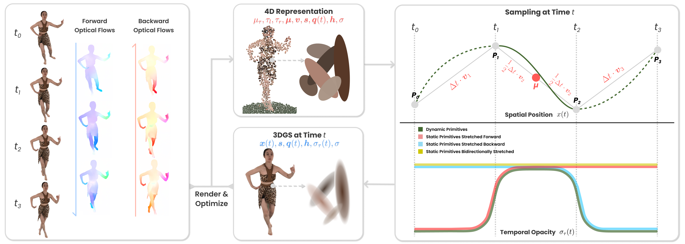
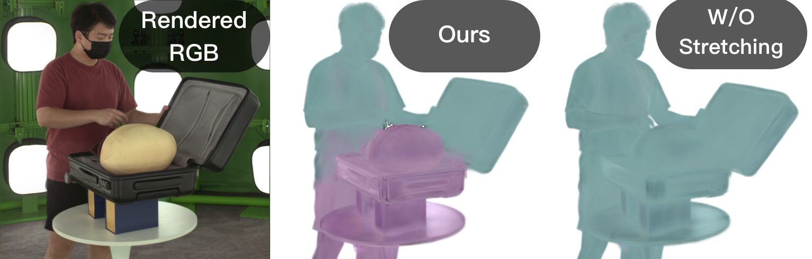

Retiming
In film production, retiming allows directors to precisely adjust the temporal flow of scenes, which allows control over motion and narrative pacing without losing visual quality.
Temporal retiming, the ability to reconstruct and render dynamic scenes at arbitrary timestamps, is crucial for applications such as slow-motion playback, temporal editing, and post-production. However, most existing 4D Gaussian Splatting (4DGS) methods overfit at discrete frame indices but struggle to represent continuous-time frames, leading to ghosting artifacts when interpolating between timestamps.
A simple example that highlights limitations in existing representations.
4D-primitive-based approaches (e.g., STGS, FreetimeGS, 4DGS, Ex4DGS) typically decompose opacity into multiple components: (1) a base (native) opacity, (2) a spatial 3D Gaussian opacity conditioned on time—where scale and rotation determine the covariance, and (3) a temporal opacity modeled using a 1D Gaussian or other parametric distributions. Importantly, the temporal opacity is freely optimized with supervision only at integer timestamps and without explicit regularization. As a result, the learned opacity may overfit to discrete frames and become temporally aliased (e.g., collapsing to sub-frame temporal support), leading to ghosting artifacts (e.g. overlapping arms) when rendering intermediate frames.
Deformation-based approaches (e.g., DeformGS, Dynamic3DGS) represent scene geometry and appearance in a canonical space, using deformation fields, control points, or physical constraints to model dynamics. (1) These methods assume that scene changes are primarily driven by geometric motion, which limits their ability to handle variations in object visibility or time-varying texture and appearance. (2) Furthermore, they depend on accurate correspondence estimation, which becomes unreliable (e.g., when an object such as a shoe moves from one foot to the other) under large motions or limited inter-frame overlap.
Ours
4D-primitive-based
Deform-based
We identify this limitation as a form of temporal aliasing and propose RetimeGS, a simple yet effective 4DGS representation that explicitly defines the temporal behavior of the 3D Gaussian and mitigates temporal aliasing. To achieve smooth and consistent interpolation, we incorporate optical flow–guided initialization and supervision, triple-rendering supervision, and other targeted strategies. Together, these components enable ghost-free, temporally coherent rendering even under large motions. Experiments on datasets featuring fast motion, non-rigid deformation, and severe occlusions demonstrate that RetimeGS achieves superior quality and coherence over state-of-the-art methods.
With coarse flow-guided primitive correspondences, each set of primitives explains at least two consecutive frames, mitigating temporal aliasing without forcing a single canonical explanation. This preserves the flexibility needed for topological changes and time-varying appearance.

In film production, retiming allows directors to precisely adjust the temporal flow of scenes, which allows control over motion and narrative pacing without losing visual quality.
Slow motion effects are important in cinematography for capturing dramatic moments and revealing details invisible to the human eye.
* This project builds upon Netflix Eyeline Studio's internal 4DGS reconstruction codebase under a formal agreement. We integrate STGS, Deform-GS, and GaussianFlow into the framework, while adopting an MCMC-based density control strategy similar to our method. This approach yields substantially higher reconstruction quality than the original implementations (densification strategy), particularly in large-motion scenarios and on discrete input frames.
W/o Triple Rendering, primitives from neighboring temporal intervals jointly reconstruct the input frame but contribute unevenly to different spatial regions, resulting in inconsistent reconstruction.
Piece-wise linear trajectories introduce visible kinks and temporal artifacts in the motion.
The magenta is rendered using static stretched primitives, and the teal is rendered using dynamic primitives (with static background removed).

Sensitivity to Extreme Rapid Motion. While RetimeGS improves robustness to challenging motion, the current framework still struggles when inter-frame displacement becomes extremely large, typically exceeding 50 pixels at 1K resolution. In this regime, optical flow becomes unreliable and the resulting motion correspondences can break down, which degrades reconstruction and retiming quality.
Temporal Consistency Artifacts. Although adjacent sets of dynamic primitives are partially supervised by the same discrete frames, their inherently disjoint representations can still produce slight temporal flickering. This limitation highlights a future direction: a unified 4D representation that preserves our flexibility while improving long-range temporal consistency.
@article{wang2026retimegs,
author = {Wang, Xuezhen and Ma, Li and Shen, Yulin and Wang, Zeyu and Sander, Pedro V.},
title = {RetimeGS: Continuous-Time Reconstruction of 4D Gaussian Splatting},
journal = {CVPR},
year = {2026},
}